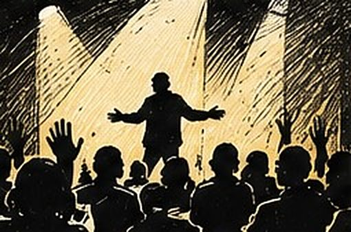
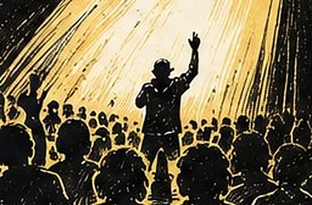
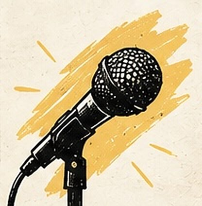

Une scène slam ouverte au Rocher de Palmer, à Cenon, pendant le Nouveau Festival
Au Rocher de Palmer, à Cenon, pendant le Nouveau Festival, j'ai animé une scène slam ouverte à tout le monde. D'anciens lycéens croisés en atelier dans la région sont venus reprendre leurs textes, d'autres ont découvert la scène pour la première fois.
Auteur : Esope · Intervenants slam : Esope

Le Rocher de Palmer, à Cenon, m'a confié l'animation d'une scène slam ouverte pendant le Nouveau Festival. Une scène ouverte, ça veut dire une chose simple : n'importe qui peut monter dire un texte, sans audition ni sélection. Ce jour-là, le public a mêlé des visages que je connaissais bien et d'autres que je découvrais.
Le contexte : animer, pas seulement écrire
Ce projet est différent des ateliers slam que je mène habituellement en milieu scolaire. Ici, pas de classe à accompagner sur plusieurs séances : mon rôle était d'animer une scène, de créer un climat où prendre la parole devient possible pour n'importe qui dans le public, et de tenir le rythme de la soirée. C'est un exercice qui demande une autre forme d'attention — moins la pédagogie d'un atelier, plus la présence d'un maître de cérémonie.
Le déroulement de la scène ouverte
Une scène ouverte se construit en direct. J'ouvre en général par un texte ou un mot d'accueil, puis je lance des appels au public par vagues, en gardant un œil sur le rythme : ne pas laisser de blanc trop long, ne pas enchaîner deux textes trop proches en intensité, garder de la place pour les hésitants qui se décident au dernier moment.
- Les habitués. Certains sont venus avec un texte déjà prêt, écrit avant de venir.
- Les anciens élèves. Plusieurs lycéens croisés en atelier dans la région sont montés reprendre d'anciens textes, parfois retravaillés depuis.
- Les nouveaux visages. Des spectateurs venus sans intention de monter ont fini par prendre le micro, portés par l'ambiance du reste de la salle.
Ce que ce format permet
Une scène ouverte n'apprend pas une technique au sens strict, mais elle offre un espace pour oser, pour tester un texte devant un vrai public, et pour observer ce que d'autres font de la même contrainte — dire un texte, debout, au micro. Pour les anciens élèves présents, c'est aussi l'occasion de mesurer le chemin parcouru depuis l'atelier.

Le moment marquant
Voir revenir des lycéens que j'avais eus en atelier, parfois plusieurs années plus tôt, et les voir remonter sur scène avec un texte qu'ils avaient écrit à l'époque — retravaillé, parfois presque méconnaissable — c'est exactement ce que je cherche à provoquer avec ces interventions : que le texte continue à vivre après l'atelier, sans moi.

Ce que ce projet a permis d’explorer
Une scène slam ouverte ne se prépare pas comme un atelier, mais elle en prolonge l'esprit : donner à n'importe qui l'occasion de dire un texte, devant un public. Si votre structure organise un événement culturel et cherche une animation slam ouverte à tous, on peut en discuter le format.